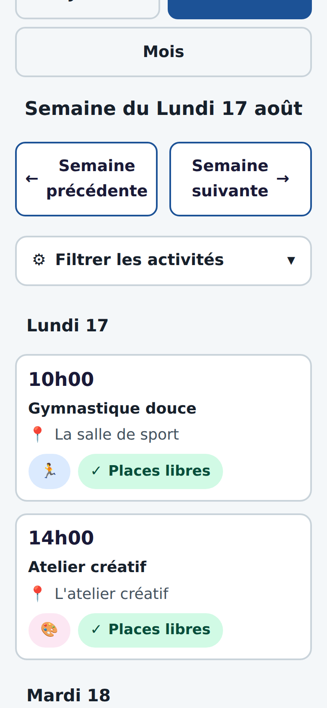
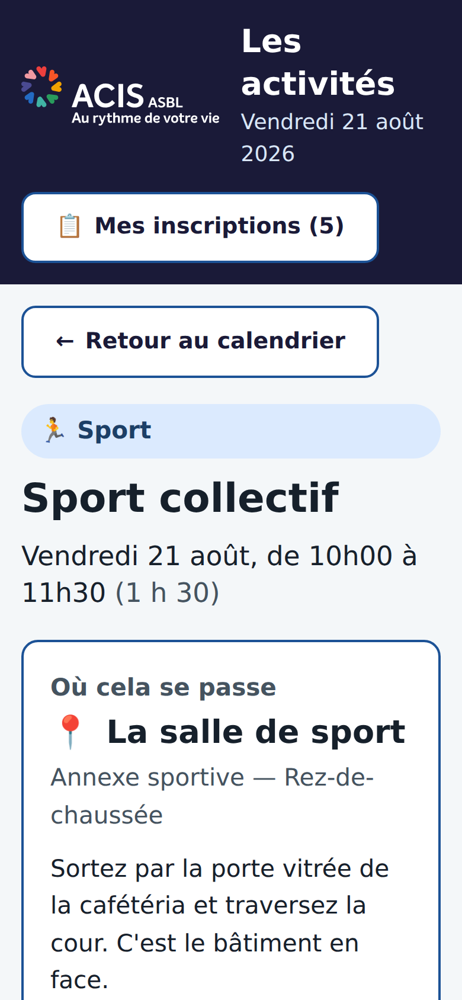
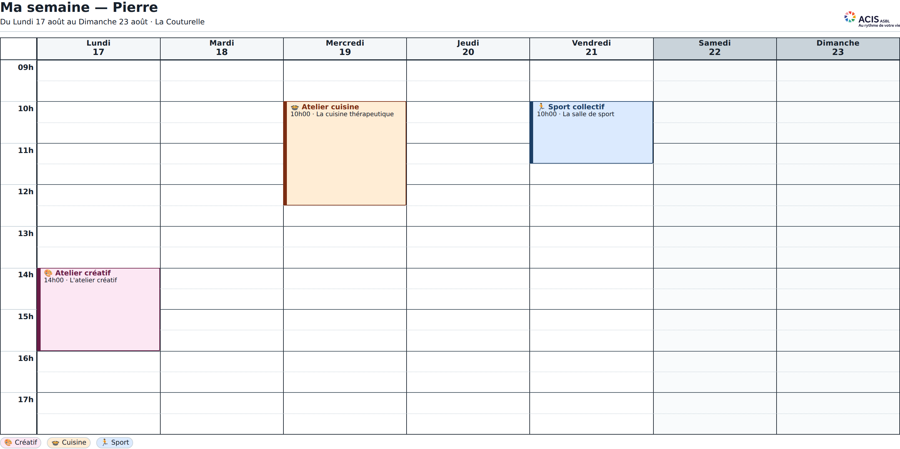
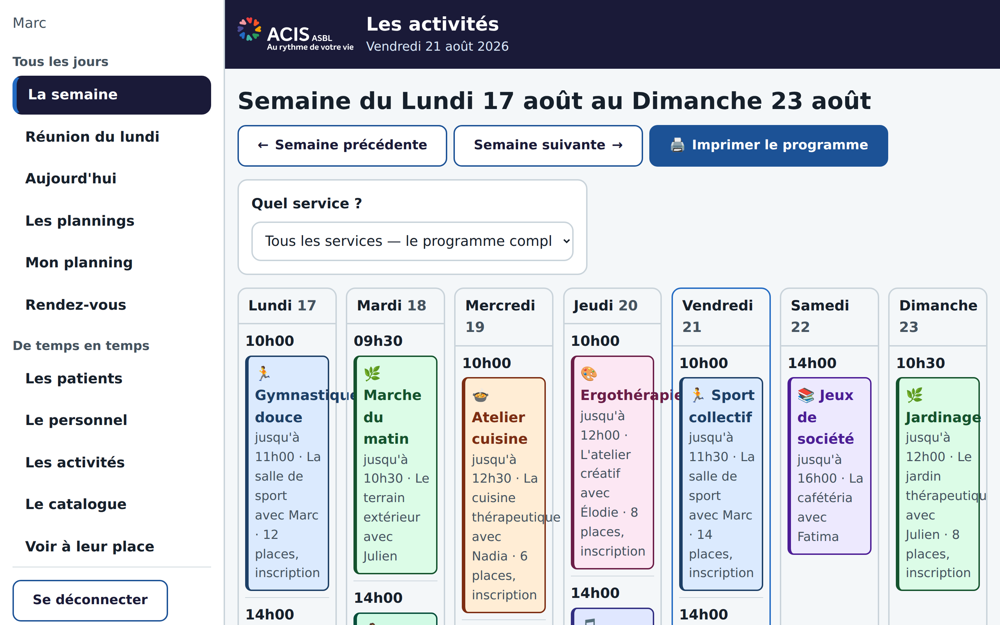
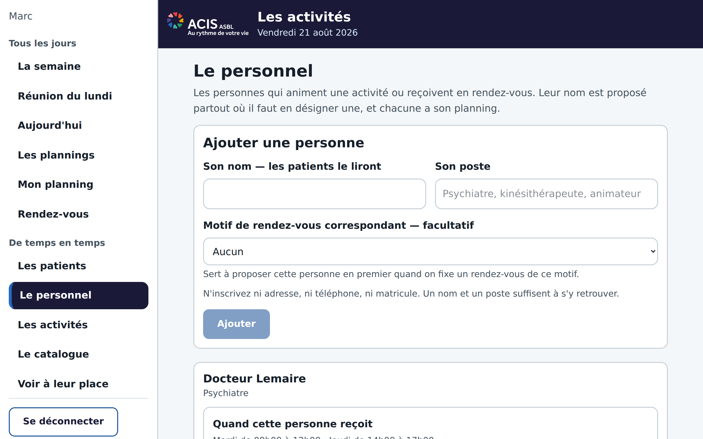
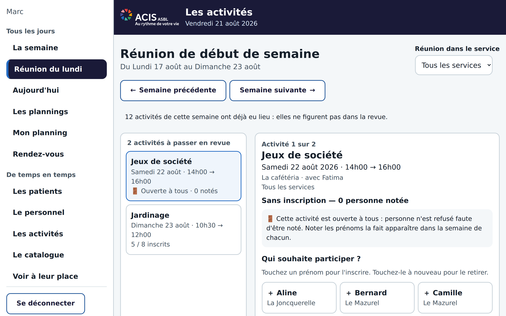
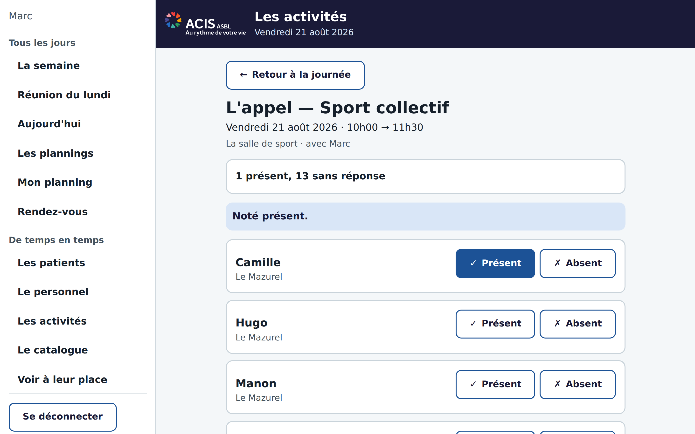
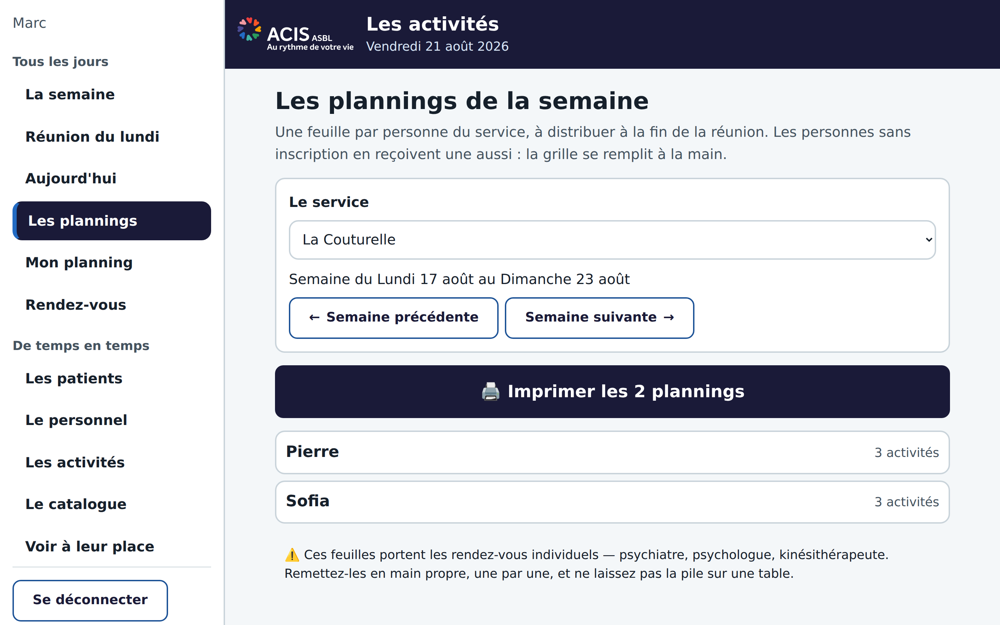
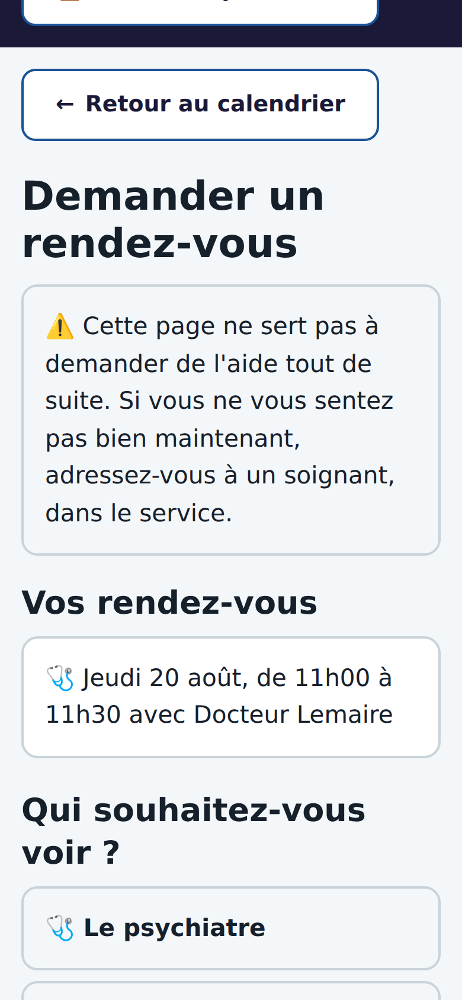
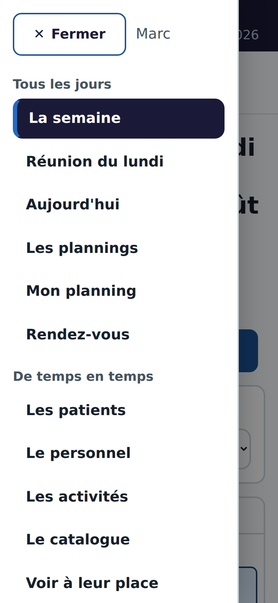

Une proposition, rien de plus
Les activités
Une application pour construire le programme des activités, inscrire les personnes, imprimer les plannings et suivre les rendez-vous.
Qui vous parle
Hugo. Je suis ici en tant que patient. Je fais ça bénévolement, sur mon temps, parce que ça me détend.
Ce que ça coûte
Rien. C'est offert, comme on montre un beau dessin. Regardez, et si ça ne vous dit rien, ça s'arrête là.
Ce qu'on va voir
Ce que j'ai observé · Ce que voit un patient · Ce que voit l'équipe · Ce qu'on pourrait ajouter plus tard.
Ça n'engage à rien. L'application existe déjà et tourne. Si elle vous plaît, on en discute ; sinon, vous aurez perdu dix minutes.
Ce que j'ai observé
Ici, tout tient sur du papier
Des feuilles, des post-it, des plannings recopiés à la main, des tableaux qu'on refait chaque semaine. Ça marche — c'est même remarquable que ça marche — mais ça tient sur beaucoup de recopiage.
Aujourd'hui
On note l'activité. On recopie qui s'inscrit. On refait la feuille de présence. On réécrit le planning de chacun. Et quand une séance est annulée, il faut retrouver tout le monde.
Avec l'application
On note l'activité une fois. Les inscriptions, les feuilles de présence et les plannings de chacun en découlent — et s'impriment.
Le papier ne disparaît pas. Il sort de l'imprimante au lieu d'être recopié. C'est tout ce que je propose de changer.
Sur quoi ça tourne
Pensé pour le téléphone, à l'aise sur l'ordinateur
Un patient l'ouvre sur une tablette ou un téléphone : gros boutons, peu de texte, deux niveaux de profondeur au maximum.
Un membre de l'équipe travaille sur son ordinateur : la semaine entière s'affiche, le menu reste ouvert sur le côté, et l'impression sort en A4.

Ce que voit un patient
Simple, parce que ça doit l'être
Les personnes qui séjournent ici peuvent être fatiguées, ralenties, désorientées. L'écran en tient compte, et ce n'est pas de la décoration.
- Gros caractères — jamais moins de 18 pixels, jamais d'abréviation.
- Grands boutons — au moins 56 pixels de haut, difficiles à rater.
- Deux niveaux — le calendrier, la fiche de l'activité. C'est tout.
- Un bouton « Retour » toujours à la même place.
- Des phrases, pas du jargon — « Vous êtes inscrit », pas « Inscription confirmée ».

Le point important
Pour les patients, rien n'est obligé de changer
Je me suis inspiré du fonctionnement actuel plutôt que d'en inventer un autre. Pour une personne qui n'a pas de téléphone, ou qui ne sait pas s'en servir, ou qui n'en veut pas : rien ne change du tout.
Elle continue à recevoir sa feuille, après la réunion du lundi, exactement comme aujourd'hui. Elle n'a pas de compte à créer, pas de mot de passe à retenir, rien à apprendre. La seule différence qu'elle verra, c'est que la feuille est plus lisible et plus jolie — et qu'elle est juste, parce que personne ne l'a recopiée à la main.
L'application peut lui être totalement transparente : elle travaille du côté de l'équipe. Elle sert ensuite à ceux qui sont à l'aise avec un écran, et il y en a — beaucoup d'entre eux travaillent déjà sur ordinateur. Mais c'est une possibilité offerte, jamais un passage obligé.

Ce que voit l'équipe
Le programme de la semaine, d'un coup d'œil
Sept colonnes, une par jour. On pose une activité en cliquant sous le jour voulu. On filtre par service. On imprime le programme pour l'afficher au mur.

Les comptes
Chacun le sien, et chacun ne voit que ce qui le concerne
Chaque membre du personnel en contact avec les patients a son compte : il crée ses activités, les anime, voit son planning et fait ses présences.
- Une activité créée par quelqu'un est la sienne : il l'anime.
- Un intervenant voit son agenda, pas celui de ses collègues.
- Les plannings des patients ne sont ouverts qu'à l'administrateur.
- Ce cloisonnement est tenu par le serveur, pas par l'affichage.

Le geste central
La réunion du lundi, en quelques clics
On parcourt les séances de la semaine, on clique sur les prénoms. Inscrit. Cliqué à nouveau : retiré. Rien d'autre à faire.
- Le patient retrouve l'activité dans son calendrier, sans rien demander.
- L'activité est complète ? On peut dépasser — l'écran demande confirmation.
- À la fin, un bouton imprime toutes les feuilles du service.

Sur place
La feuille de présence, sans la feuille
Pendant l'activité, la personne qui l'anime coche présent ou absent. Quelqu'un se présente sans être inscrit et elle l'accepte ? Un bouton, et il est inscrit et noté présent du même geste.
Visible seulement par la personne qui anime, et par l'administrateur. Ce n'est pas une liste qui circule.

La fin de la réunion
Un bouton, et la pile sort de l'imprimante
Une feuille par personne du service, dans une grille horaire lisible à un mètre. Y compris pour ceux qui ne sont inscrits à rien : une grille vide se remplit à la main.
- Les rendez-vous individuels y figurent — c'est ce qui évite de les manquer.
- Une page par personne, jamais deux feuilles sur la même.

Les rendez-vous individuels
Demander à voir quelqu'un, et savoir quand
Un patient demande à voir le psychiatre, le kinésithérapeute, l'assistant social. Il dit qui il veut voir — jamais pourquoi.
- Beaucoup ne se serviront jamais de l'application : un soignant note le rendez-vous pour eux.
- Chaque intervenant déclare ses plages : « mardi de 09h00 à 12h00 ».
- Fixer un rendez-vous en dehors ? L'écran prévient, mais n'interdit pas.
- Chacun choisit : acceptation automatique, ou je valide moi-même.

Une idée, à discuter
Et si les patients proposaient des activités ?
Quelqu'un veut lancer un tournoi d'échecs, un atelier tricot, une balade. Il la propose depuis l'application ; elle n'apparaît au programme qu'une fois validée par un membre de l'équipe.
Ce que ça change
Une personne qui propose son activité n'est plus seulement destinataire du programme : elle y contribue. C'est un petit levier, mais réel.
Ce que ça ne change pas
Rien ne s'affiche sans validation. L'équipe garde la main sur ce qui entre au programme, et sur qui l'anime.
Ce n'est pas encore construit. Je le mets sur la table parce que ça me semble l'idée la plus intéressante du lot — mais c'est à vous de dire si elle a sa place ici.
Plus tard, si vous le voulez
Les statistiques — et pourquoi je ne les ai pas faites
Techniquement, tout est là pour produire :
- Le taux de présence par activité, par service.
- Les inscriptions non suivies d'une présence.
- Le nombre d'activités faites par personne sur un mois.
- Le repérage de quelqu'un qui ne participe à rien.
Ma réserve, dite franchement
Je n'aime pas ficher les gens, et je ne l'ai donc pas construit. Compter les présences de quelqu'un, ce n'est pas anodin.
Mais si vous m'expliquez en quoi c'est thérapeutiquement utile — repérer un repli, mesurer l'effet d'un accompagnement — je le ferai. Et si vous tenez déjà ces chiffres à la main, autant qu'ils soient justes.
C'est votre décision, pas la mienne. Je voulais juste que vous sachiez que c'est possible, et à quel prix.
Plus tard, si vous le voulez
Et pour ceux qui n'ont pas d'écran à eux ?
Une borne — une tablette fixée dans le couloir ou dans la salle commune — et la question ne se pose plus : plus besoin d'avoir un téléphone pour consulter quelque chose. On s'approche, on regarde, on repart. Rien à installer, rien à posséder.
Le programme du jour
Les activités de la semaine, ce qui a lieu cet après-midi, ce qui est annulé. La même information que sur la feuille, mais toujours à jour.
Le menu, et le reste
Les repas de la semaine, les horaires, les informations pratiques de la maison. Rien de tout cela n'est médical, et rien n'est personnel.
Un point de repère
Un endroit unique où l'on trouve « ce qui se passe ici », plutôt que trois affiches à trois étages différents.
Pas pour les rendez-vous : ce sont les soignants qui les posent, et cela doit le rester. La borne informe, elle ne demande rien et n'affiche rien qui concerne une personne en particulier.
Ce n'est qu'un exemple. Une fois que l'information est propre quelque part, la seule limite est l'imagination — l'afficher sur un écran de couloir, l'imprimer autrement, la donner à un autre outil : ce n'est plus qu'une question d'envie.
Les garde-fous
Ce qu'elle ne contient pas, et ne contiendra pas
J'ai posé ces limites dès le début, avant d'écrire la première ligne. Elles ne sont pas négociables de mon côté.
Aucune donnée de santé
Pas de diagnostic, pas de note clinique, pas de dossier. Un rendez-vous dit avec qui, jamais pourquoi.
Le minimum sur les personnes
Un prénom et un service. Ni nom de famille, ni date de naissance, ni numéro de dossier — l'écran ne propose même pas de champ pour en saisir.
Pas de messagerie
Aucun échange écrit entre patient et soignant. Ce n'est pas un outil de soin, c'est un tableau d'activités.
Un patient ne voit jamais les inscriptions d'un autre, ni la liste des participants d'une activité. Ce n'est pas une politesse d'affichage : le serveur refuse la demande.
La suite, si suite il y a
Vous en faites ce que vous voulez
L'application fonctionne aujourd'hui. Elle est testable en cinq minutes, avec des données inventées : aucun vrai patient, aucun risque.
- Si ça ne vous dit rien — on en reste là, sans rancune.
- Si vous voulez essayer — un service, quelques semaines, on regarde.
- Si ça devait servir pour de vrai — il faudra que l'établissement en devienne propriétaire, avec son propre hébergement. Ce n'est pas à moi de porter ça.

Merci d'avoir regardé. — Hugo